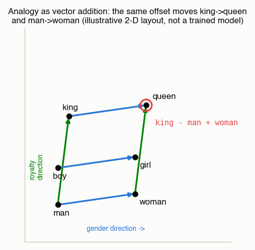
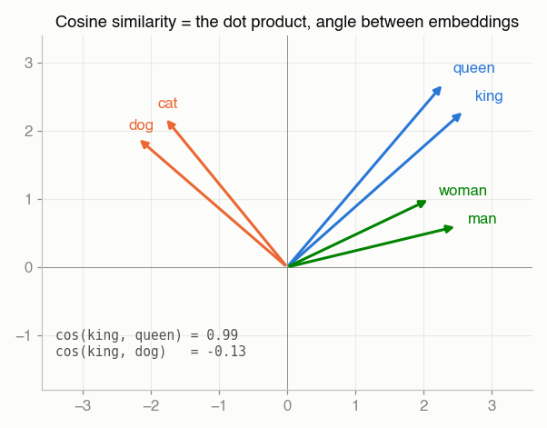
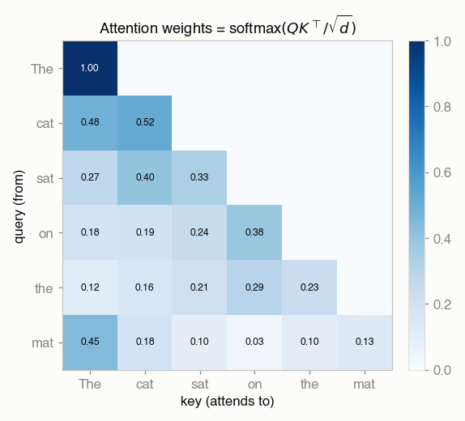
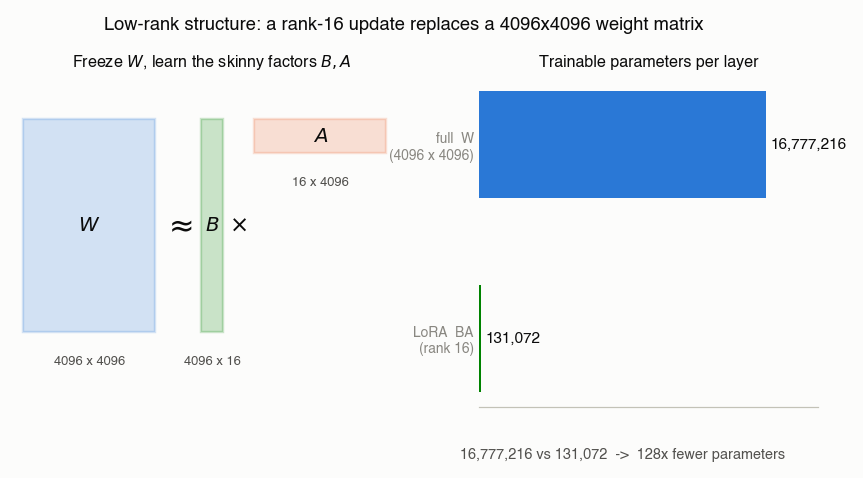
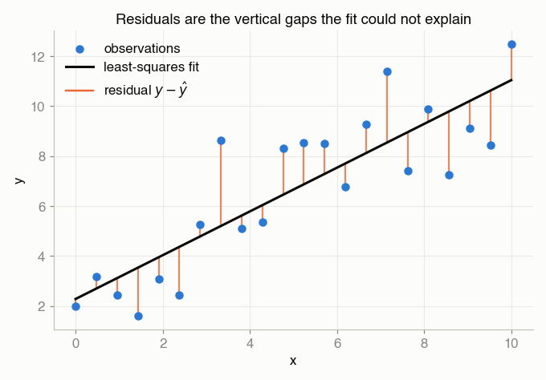
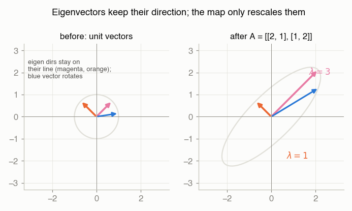
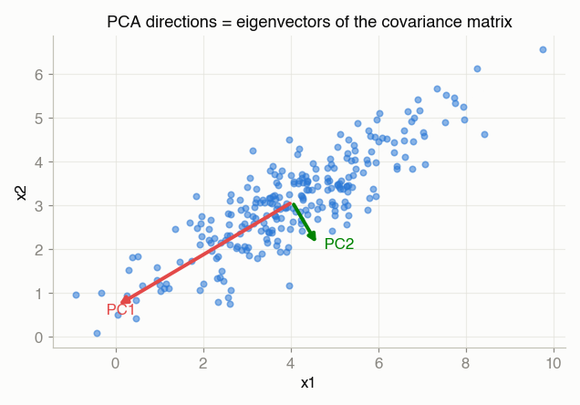
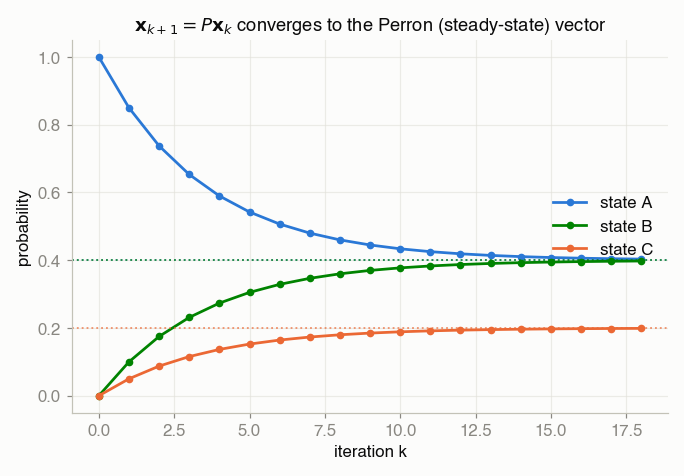
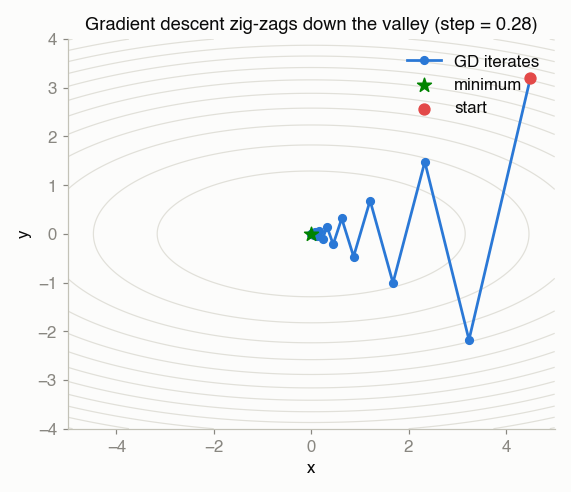

Linear Algebra in Machine Learning¶
Every page in this chapter ends with an "In modern ML" note that ties one classical result to something I actually build elsewhere in the book. This page is the map that collects them all in one place — the concept, a picture, and a link to the fuller treatment. If a single idea runs through the whole book it is this: least squares, PCA, attention, PageRank, and gradient descent are all the same handful of linear-algebra moves wearing different hats.
Read this as the index; follow each link for the derivation and the gotchas.
1. Vectors as meaning — embeddings¶
An embedding turns a word (or image, or user) into a vector, laid out so that geometry encodes meaning: similar things point the same way, and directions carry consistent concepts. The classic demonstration is analogy-by-arithmetic —
— which works because the offset that separates "man" from "king" (a royalty direction) is roughly the same offset that separates "woman" from "queen." Add and subtract the vectors and you slide along those concept axes.

Provenance. This is an illustrative 2-D layout I placed by hand so the arithmetic is exact — it is not a projection of a trained embedding. Real embeddings live in hundreds of dimensions and the analogy holds only approximately; I drew this to show the mechanism, not to claim a measurement.
Cosine similarity vs the dot product¶
"How similar are these two vectors?" is a dot product. The raw dot product u · v
mixes in the vectors' lengths; cosine similarity normalizes them away so you
compare direction only — cos θ = (u · v) / (‖u‖‖v‖). For unit vectors the two are
identical. Retrieval systems and word-analogy math almost always want cosine, because a
frequent word shouldn't rank as "more similar" just for having a longer vector.

Fuller treatment: Linear Systems → the dot product is cosine similarity.
Where I touched this for real: my Mini-GPT from scratch
begins with a learned token embedding table (nn.Embedding) — the rows are these
vectors, trained end-to-end rather than placed by hand.
2. Matrix multiplication as batch transformation — attention¶
A matrix product is not just "rows times columns" — it is every pairwise interaction
computed at once. Stack query vectors into Q and key vectors into K; the single
product QKᵀ produces one similarity score for every query–key pair. Softmax each row
and those scores become attention weights.

The lower-triangular mask is causality — a token can attend to the past, not the future.
Every cell is a normalized dot product (§1); matrix multiplication just does all n² of
them in one shot, which is why attention is a couple of big matmuls rather than a Python
loop. This is the core operation in my
Mini-GPT.
Fuller treatment: Linear Systems → matrix multiplication is attention.
3. Low-rank structure — SVD, compression, LoRA¶
The SVD says every matrix is a rotation, an axis-aligned stretch, and another rotation — and if the stretch factors (singular values) fall off quickly, you can throw most of them away and barely change the matrix (the Eckart–Young theorem). "Most real matrices are approximately low rank" is the single fact behind image compression, PCA, recommender factorizations, and LoRA fine-tuning.
LoRA freezes a big weight matrix W and learns a low-rank correction W ≈ W + BA, where
B is d×r and A is r×d. The parameter savings are the whole point:

A full 4096×4096 layer has 4096² = 16,777,216 parameters; a rank-16 update has only
2 · 4096 · 16 = 131,072 — roughly 128× fewer to train.
U, s, Vt = np.linalg.svd(A, full_matrices=False)
r = 16
A_r = (U[:, :r] * s[:r]) @ Vt[:r] # best rank-r approximation of A
Fuller treatment: SVD → low-rank approximation, the idea behind LoRA.
4. Least squares & residuals — regression and boosting¶
Least squares fits a model by dropping a perpendicular: it finds the
point in the column space of A closest to the target b, and the leftover b − b̂ is
the residual — the part of the data the model cannot explain.

Rotate that projection picture into data space and the residuals are exactly the gaps in linear regression. This reframing is the seed of gradient boosting: fit a simple model, compute its residuals, then train the next model to predict those. Each round is another least-squares step against the leftover error — the idea I lean on in bagging & boosting and XGBoost.
Fuller treatment: Least Squares → residuals are what's left to explain.
5. Eigen-everything — PCA, PageRank, power iteration¶
An eigenvector is a direction a matrix only rescales (never rotates); its eigenvalue is the scale factor. Two of the most-used algorithms in ML are eigenvector problems in disguise.

PCA is the eigenvectors of the covariance matrix — the orthogonal directions of greatest variance. Keep the top few and you have a faithful low-dimensional representation.

I implemented PCA from scratch
(covariance → np.linalg.eig), and the SVD gives the same directions without
ever forming the covariance matrix.
PageRank is the dominant eigenvector of the web's transition matrix — the steady-state distribution of a random surfer. Perron–Frobenius guarantees that vector is unique and positive, and the power method (repeatedly multiply by the matrix and renormalize) converges to it. The same power iteration finds the top PCA component.

Fuller treatments: Eigenvalues → covariance eigenvectors are PCA, Perron–Frobenius → PageRank is Perron–Frobenius, PageRank & Graph Methods.
6. Gradients & optimization — GD → SGD → Adam¶
Training a model is minimizing a loss, and the workhorse is gradient descent: step downhill along the negative gradient. On an ill-conditioned (stretched) bowl it zig-zags — which is why the modern optimizers exist.

The lineage from that picture to a real training loop is short:
- GD — full-batch, fixed step. Clean but slow and memory-hungry.
- SGD — estimate the gradient from a mini-batch; noisier steps, far cheaper, and the noise can help escape bad basins.
- Momentum / RMSProp / Adam — adapt the step per parameter to damp the zig-zag in ill-conditioned directions.
Every optimizer in my neural networks and Mini-GPT is this loop with two upgrades: the gradient comes from backpropagation instead of sympy, and the step size adapts per parameter. My projected gradient descent notebook is the from-scratch version with an Armijo line search.
Fuller treatment: Gradient Descent → in modern ML.
The map, in one table¶
| Linear-algebra concept | Where it shows up in ML | My page / notebook |
|---|---|---|
| Dot product / cosine similarity | Embedding search, word analogy | Linear Systems, Mini-GPT |
Matrix multiplication (QKᵀ) |
Attention scores | Linear Systems, Transformers & Attention |
| Low-rank approximation (SVD) | Compression, LoRA fine-tuning | SVD |
| Projection / least squares | Regression, boosting on residuals | Least Squares, Bagging & Boosting |
| Eigenvectors of the covariance | PCA / dimensionality reduction | Eigenvalues, PCA |
| Dominant eigenvector / power method | PageRank | Perron–Frobenius, PageRank |
| Gradients / steepest descent | SGD, Adam, every training loop | Gradient Descent, Neural Networks |
ℓ₁ geometry / sparsity |
Sparse models, compressed sensing | Compressed Sensing |
Figures. The two new figures on this page (the analogy parallelogram and the LoRA parameter-count schematic) were generated by
docs/02-linear-algebra/img/generators/make_figures.py; the rest are reused from the per-topic pages. The analogy layout is illustrative, as noted above; all other figures use toy/synthetic data.